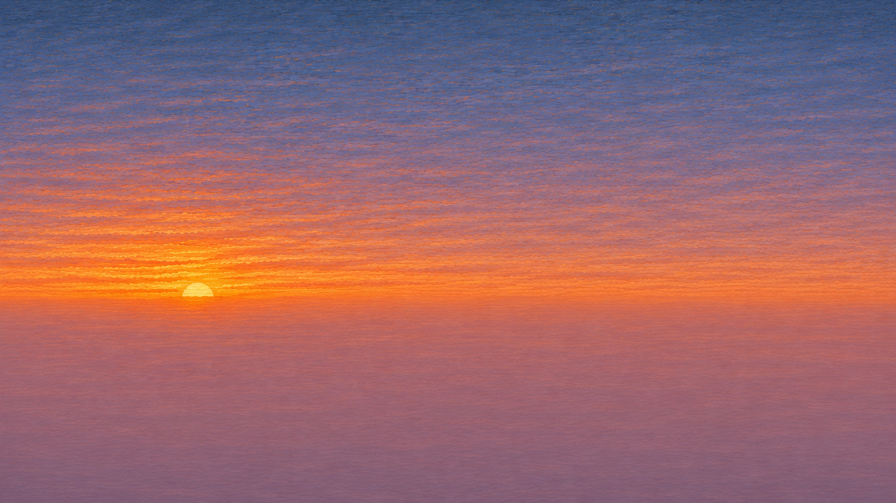
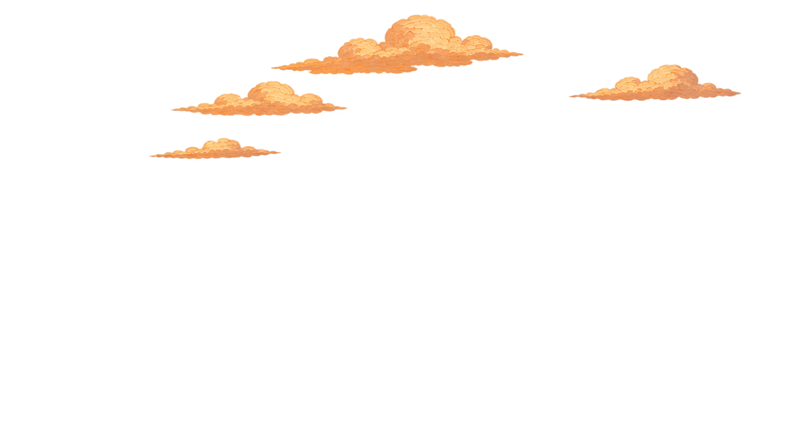
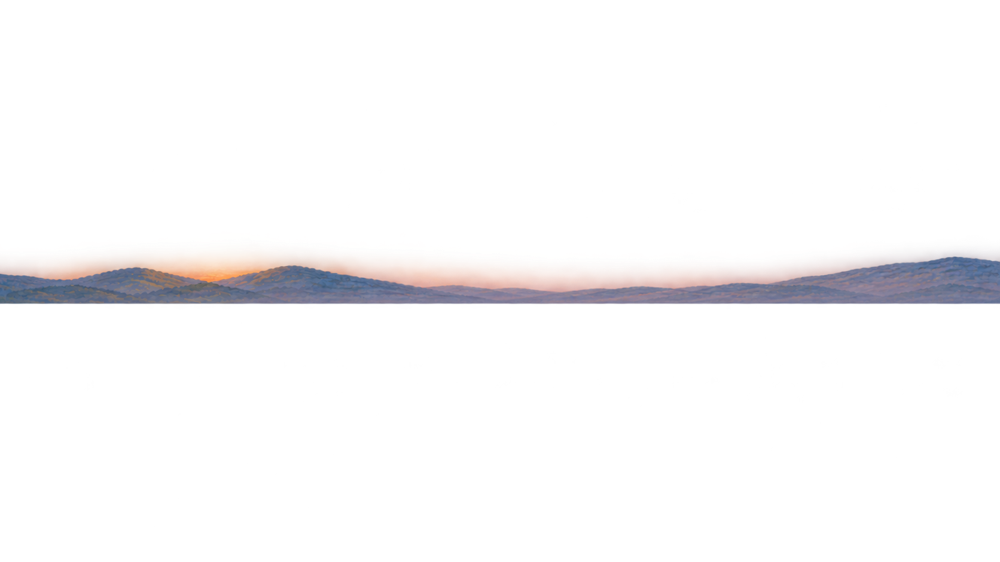
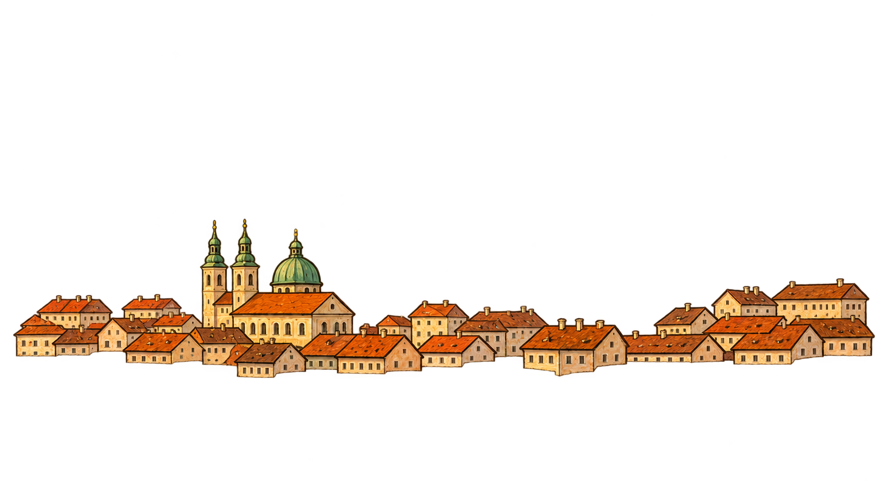
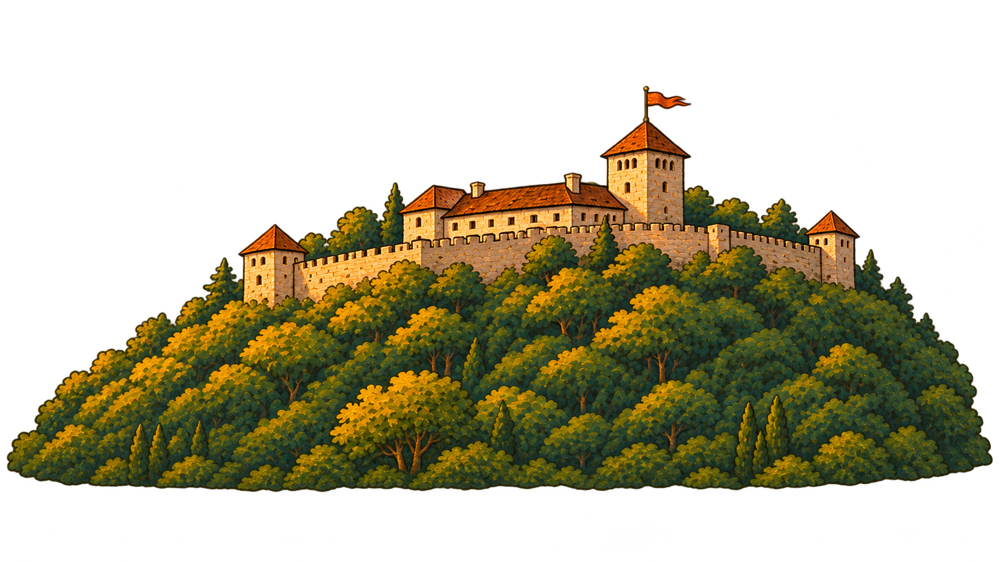
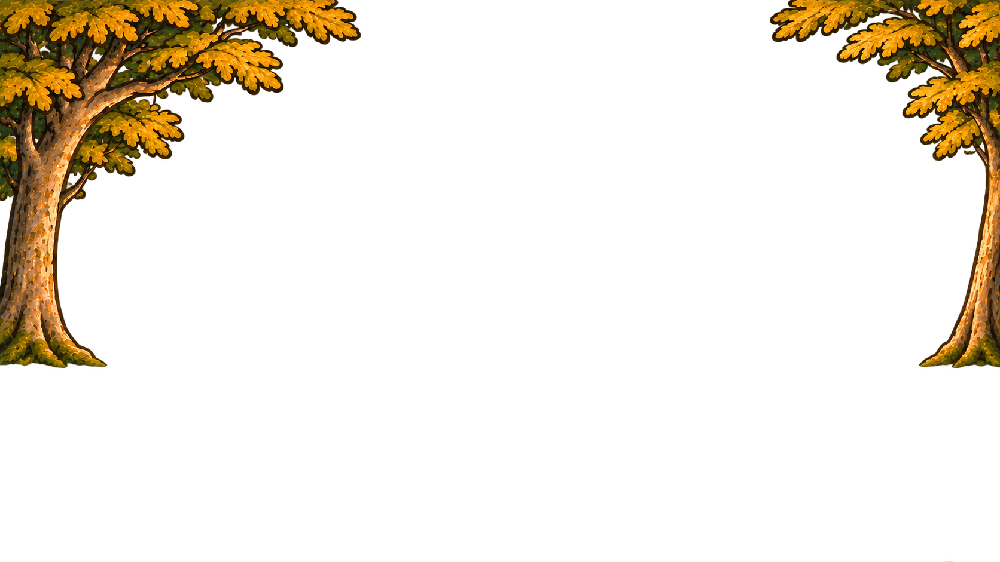
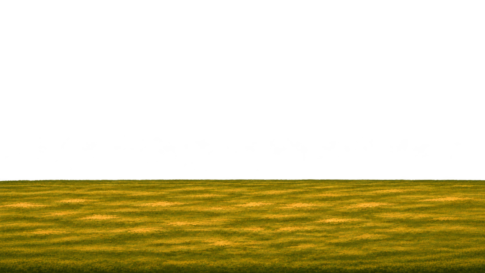
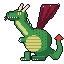
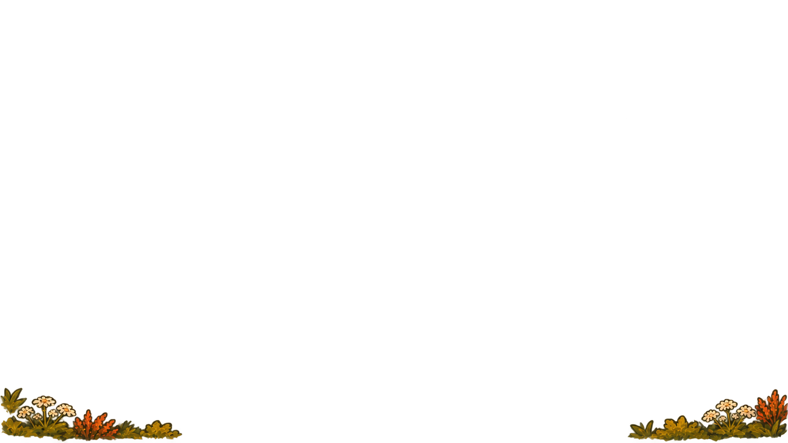

Approaching Ljubljanski grad
Scrub or play a rightward approach along the wide grass lane. The rooftops and castle hill move at different depths while the close trees and flowers pass a little faster.










How the speeds work: the grass lane is the 1.0× reference. The edge trees move at 1.08× and flowers at 1.22×. The connected castle hill moves at 0.38×, old-town roofs at 0.22×, distant hills at 0.12×, and sky at 0.02×. The clouds also drift slowly on their own.
Open the static layer composite · See the approved scene preview